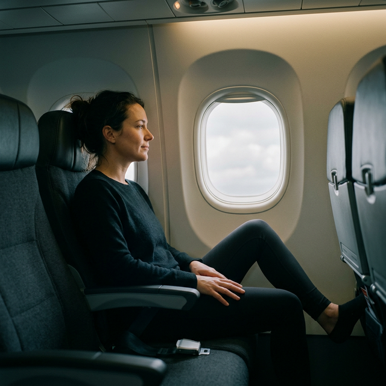
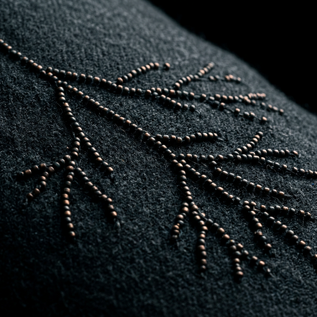

The legging that replaces $300 in-flight compression upgrades — and fits in your carry-on.
Sound familiar?
"I fly and land feeling 20 years older."
When you sit for hours, your legs can feel heavy and uncomfortable. That's why your ankles feel puffy and your shoes won't go back on at landing.
"The first two days of every trip are ruined."
Heavy legs, puffy ankles, and fatigue that doesn't lift until day three. You're on vacation — you deserve to arrive ready to explore.
"I've tried compression socks. They don't do much."
Standard compression just squeezes — and only to the knee. MicroPerle® provides a gentle micro-massage sensation from foot to waist, offering continuous comfort support at 35,000 feet.
Verified reviews from frequent flyers, world travelers, and medical professionals.
"They are amazing for travel as I've always swelled on long drives and plane rides — these really help avoid the swelling. Customer service was amazing too. I will definitely continue to buy from them!"
"I'm in love with this jumpsuit and it is the base to my travel uniform. I travel extensively for work and using Elastique has been a game changer in reducing bloating. It's the only product I wear while traveling!"
"I had to get another pair because I can't live without them. The most visible difference is when I fly with them on long haul flights. My legs don't feel swollen or tired anymore. Big win!"
"Absolutely the best leggings for traveling, especially long flights. Helped to prevent water retention and leg swelling. Highly recommended."
At 35,000 feet, prolonged sitting can leave your legs feeling heavy and uncomfortable. The result: puffiness, fatigue, and the infamous "shoe struggle" at landing.
Without Support
With Elastique
All-day comfortable. Does the work of compression — without looking like compression.
$235 · HSA/FSA eligible
Hundreds of MicroPerle® micro-massage beads are woven into the fabric in strategic positions. As you make small movements — even just shifting in your seat — the beads gently provide a micro-massage sensation to help your legs feel lighter and more comfortable.

The first two vacation days lost to heavy legs and swelling aren't free. Neither are the remedies people reach for.
HSA & FSA eligible. 92% of customers report noticeable relief. 30-day guarantee — if it doesn't work, you don't pay.
15,847 travelers chose to stop wasting the first days of their trips. Join them — with a 30-day guarantee protecting every order.
Shop Travel Collection →Take $50 off your first Travel Collection piece. Limited time offer.